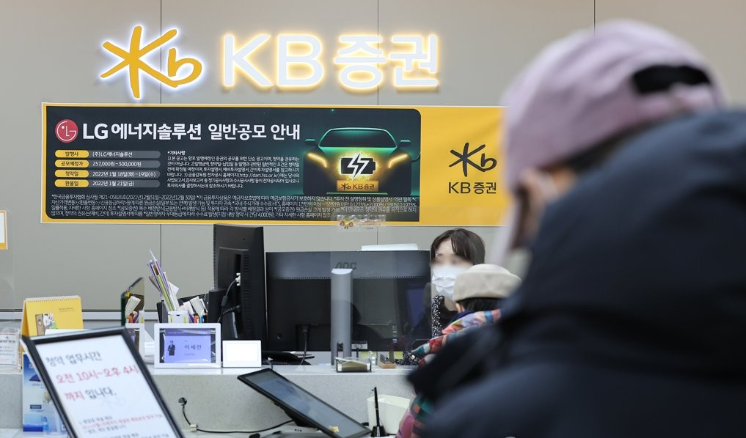
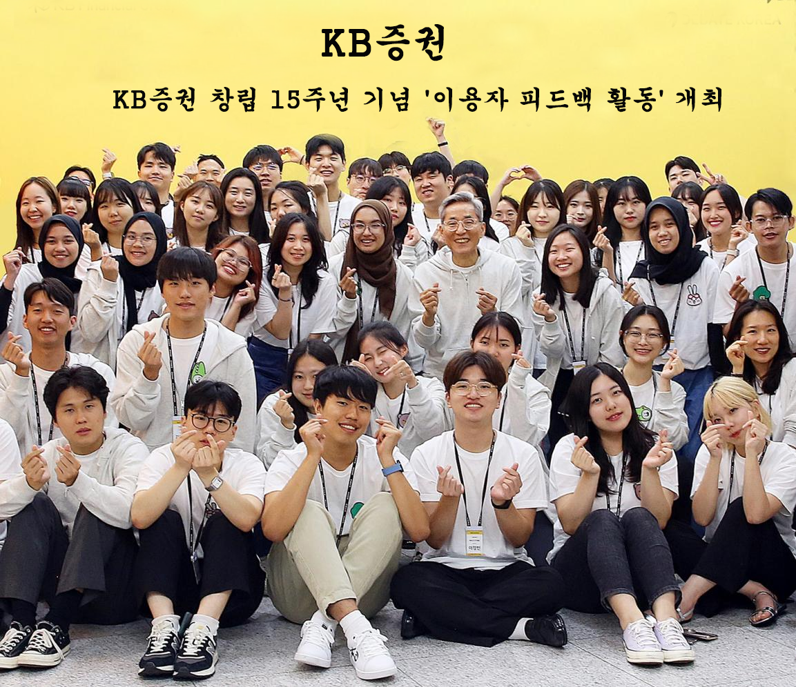
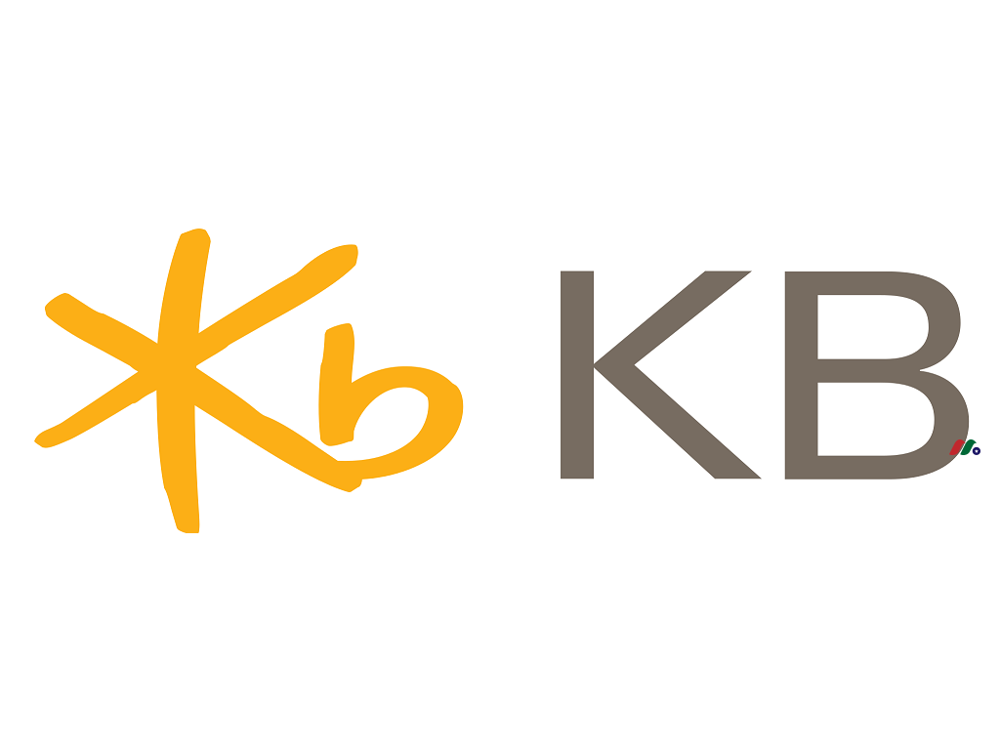
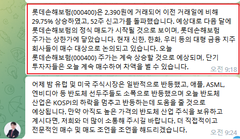
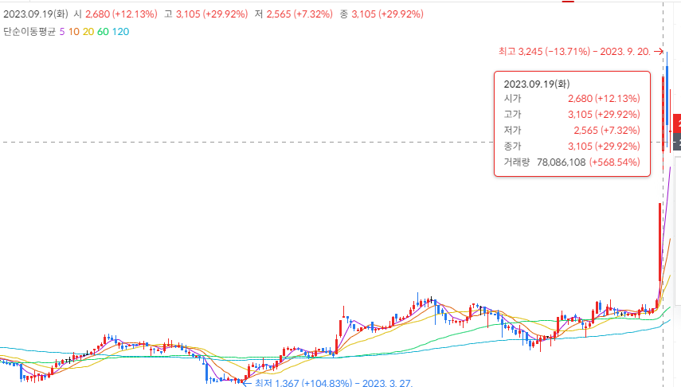
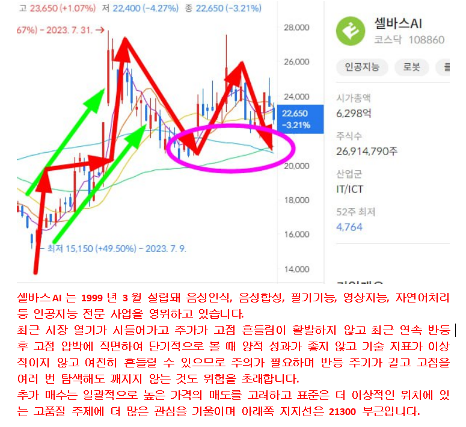
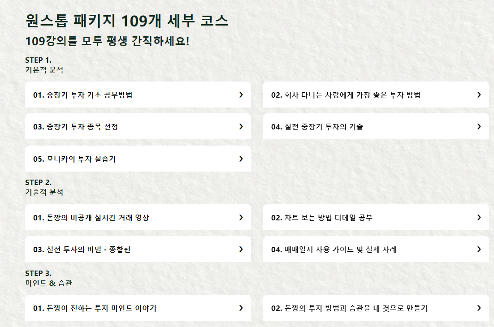
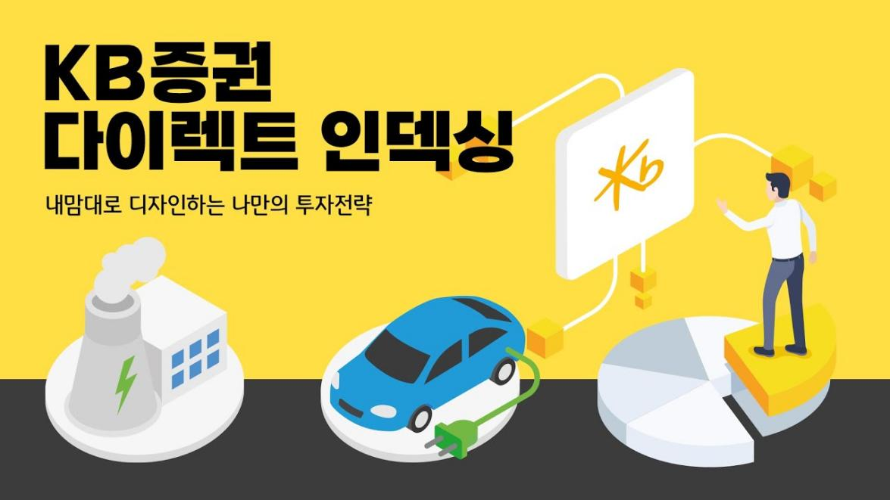

KB증권이 창립 15주년을 기념해 이용자 보상을 위한 특별 이벤트를 진행했다.
지금 카카오에 KB증권 브로커로 가입하시면 KB증권 전문 애널리스트들이 엄선한 단기급등주를 무료로 받아보실 수 있습니다. 5일) 및 장기 우량주(3~6개월 보유 예상 100% 수익)를 보유하고 있습니다.
그리고 귀하가 보유하고 있는 자사주에 대해서는 KB증권의 전문 애널리스트가 무료로 의료 상담을 제공해 드립니다.


현재 주식 시장 상황은 예측할 수 없으며, 투자자들은 항상 돈을 급등시킬 수 있는 주식을 찾고 있습니다. 이제 KB증권이 창립 15주년 기념 리워드 이벤트를 성대하게 맞이하여, 투자자 여러분의 성원에 보답하고자 파격적인 혜택을 런칭하였습니다! 저희 브로커에 가입하시면 무료로 주가 급등의 기회를 얻으실 수 있고, 증권사 전문 애널리스트의 무료 주식 보유 건강 진단이 여러분을 기다리고 있습니다!
KB증권 피드백 프로그램을 선택하는 이유는 무엇인가요?
주식 급등 기회: 우리는 주식 급등에 대한 투자자들의 욕구를 잘 알고 있으므로 특별히 이 활동을 시작했습니다. 우리 브로커에 가입하시면 엄청난 잠재력을 지닌 급등하는 주식을 무료로 얻을 수 있는 기회를 갖게 되어 투자 여정에 더 큰 자극을 줄 수 있습니다.


10월 25일 KB증권 내부그룹 전문애널리스트들이 공유한 급등주에서는 이날 일일 한도에서 30%의 이익을 냈다.
전문 분석가 지원: KB증권은 경험이 풍부한 전문 분석팀을 보유하고 있어 주식 보유 건강진단 서비스를 무료로 제공해드립니다. 귀하가 보유하고 있는 주식에 대한 종합적인 분석과 평가를 통해 귀하의 투자 포트폴리오를 더 잘 관리하고 최적화하는 데 도움이 되는 정확한 투자 조언을 제공할 것입니다.

실용적인 투자 강좌: KB증권의 전문 애널리스트가 제공하는 실용적인 투자 강좌를 브로커에 무료로 배우실 수 있습니다. 이 코스는 주식 투자의 핵심 포인트와 실무 기술을 공개하여 투자 과정에서 정보에 입각한 결정을 내리는 데 도움을 줍니다.

국제 가시성 향상: KB증권은 국제 가시성을 높이기 위해 특별히 로그인 학습 활동을 시작했습니다. 2개월 연속 로그인하면 Apple 15ProMAX 1TB를 받게 됩니다. 이는 귀하의 장기적인 지원에 대한 감사와 피드백입니다.
우리 중개업에 참여하여 투자 기회를 포착하세요!
지금 KB증권에 가입하셔서 15주년 기념 보상 프로그램의 다양한 혜택을 누려보세요! 아래 QR코드를 스캔하거나 링크를 클릭하시면 급등하는 주식, 전문 애널리스트의 주식보유진단 서비스, 실무투자강좌 학습기회 등을 단독으로 만나보실 수 있습니다. 기회와 도전으로 가득 찬 이 주식 시장에서, 여러분의 투자 목표를 달성하고 재정적 자유를 향한 길을 향해 나아갈 수 있도록 함께 노력합시다!

질문이 있으시거나 더 많은 정보가 필요하시면, 언제든지 저희에게 연락해주세요. 여러분의 많은 관심과 지원에 감사드리며, 더욱 빛나는 투자 미래를 위해 여러분과 함께 노력하겠습니다!